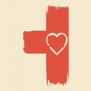

10 mg/L
The EPA drinking water limit
It protects babies: infants who drink formula made with high-nitrate water can develop “blue baby syndrome,” where blood can’t carry enough oxygen.
Source: EPA

The Street Health ProjectCedar Rapids & Marion, IowaProgram 2 · Clean water
NiFi
How much nitrate is in the rivers near you? NiFi shows it live, from public USGS water data.
NiFi turns public water data into plain English. Type your town or tap a river, and see how much nitrate is in it right now, what that means for you, and how it has changed over the year.
Free · no account · works on your phone, even offline
Nitrate is a form of nitrogen that plants need. Whatever crops don’t use can wash out of fields and into streams, and in Iowa most of it comes from farmland, through underground drain pipes called tile lines.
10 mg/L
It protects babies: infants who drink formula made with high-nitrate water can develop “blue baby syndrome,” where blood can’t carry enough oxygen.
Source: EPA
600,000
In June 2025, nitrate in the Des Moines and Raccoon rivers got so high that Central Iowa Water Works banned lawn watering for the first time, to stay under the limit.
Source: City of Polk City (June 2025)
45%
Iowa’s Nutrient Reduction Strategy aims to cut the nitrogen and phosphorus leaving the state by 45%, mostly through farm practices like cover crops.
Source: Iowa Nutrient Reduction Strategy
Private wells aren’t regulated, so owners need to test them. Iowa offers free well testing through county health departments while funds last. Iowa DNR: private well testing
12 U.S. Geological Survey sensors read nitrate every 15 minutes, and about 90 more river sites show lab samples, always with their date. Switch to 3D to see every sensor as a pillar of light.
Every reading is green, yellow or red around the EPA limit, with what it means for drinking water, swimming, fishing and private wells near you.
Save the rivers you care about. NiFi shows how they changed this week and warns you when one near you, or one you’re watching, goes up a level.
A runoff-risk check that combines nearby river trends, the rain forecast and the season, plus practices that keep nitrogen on the field. It’s general educational guidance, not agronomic advice.
Professional river sensors cost thousands of dollars, so most of Iowa’s creeks, ditches and tile outlets are never measured. Our team is building a low-cost nitrate sensor that a farmer or a school could put in the water they care about.
When it’s ready, its readings will show up in NiFi as community data, right next to the official USGS sites.
These are river readings, not tap water. USGS data is provisional and may be revised.
NiFi is built by The Street Health Project’s four co-founders, high school students in Cedar Rapids and Marion, Iowa.